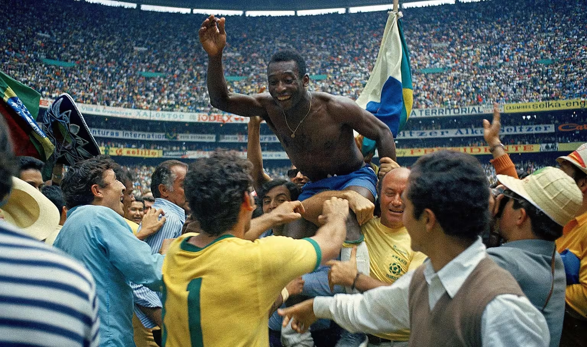
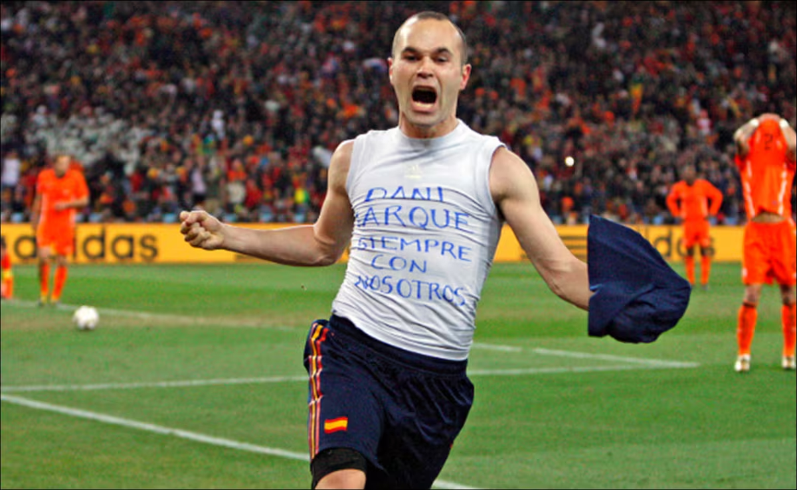
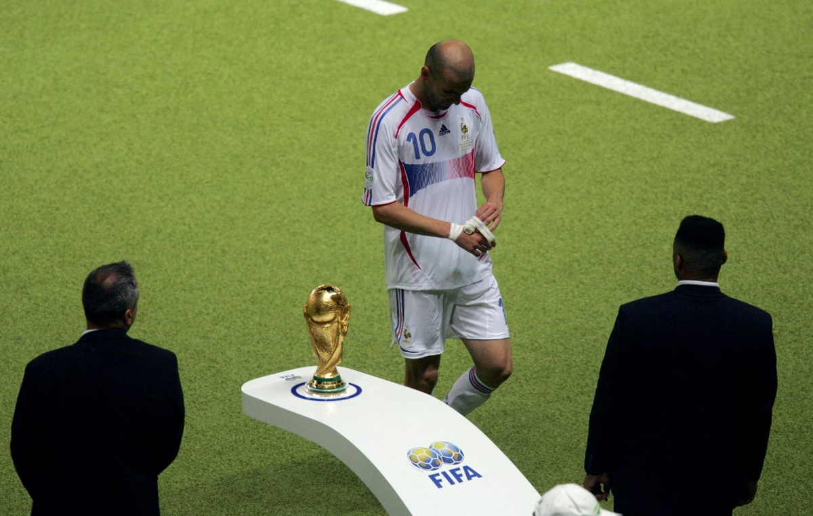
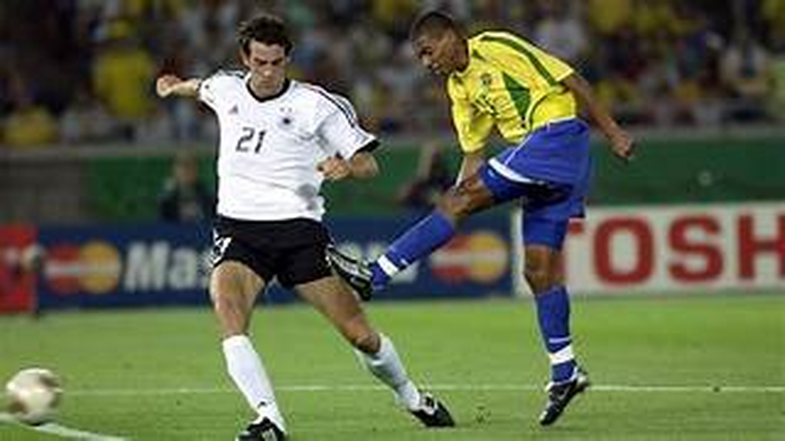
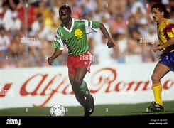

Lionel Messi in Argentine

Uruguay 1930

Lucien Laurent

Bresil 1:7 Deutscland

Suárez-Viertelfinale im Jahr 2010

Iniestas Siegtor im Finale

WM-Finale 2006: Italien gegen Frankreich und Zidanes Kopfstoß

Ronaldo führt Brasilien zum WM-Titel (2002)

Zidane führt Frankreich zum WM-Titel (1998)

Roberto Baggios verschossener Elfmeter im WM-Finale 1994

Kamerun schlägt Argentinien im Eröffnungsspiel der WM 1990

Maradonas Tor des Jahrhunderts bei der WM 1986

Pelé wird 1958 zum jüngsten Weltmeister

Das Wunder von Bern 1954

Roger Milla begeistert die Welt 1990